Croquis · rien n'est changé dans le jeu
44 créatures à la peau refaite
Même méthode que le loup : maillage régulier, poids de peau calculés par Blender, chaque partie suit ses propres os. Chaque image : à gauche avant, à droite après , dans la même pose d'effort (patte levée, cou baissé, ailes à demi repliées). L'étirement de la peau baisse pour chacune. Les autres créatures (surtout les ailées) gardent leur peau actuelle, qui reste meilleure. Écartées à l'œil : Souris et Chat noir (moustaches perdues), Liche (bâton abîmé).
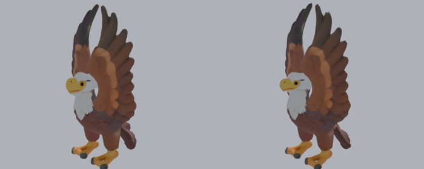
Aigle · étirement 1.66 → 1.52 (pire point 6.3 → 6.3)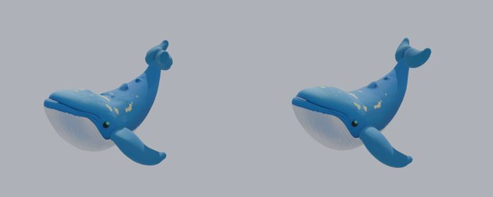
BaleineCeleste · étirement 1.53 → 1.26 (pire point 3.5 → 1.7)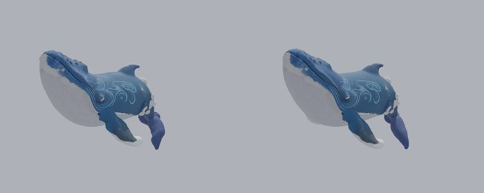
BaleineNuage · étirement 1.44 → 1.25 (pire point 3.6 → 1.6)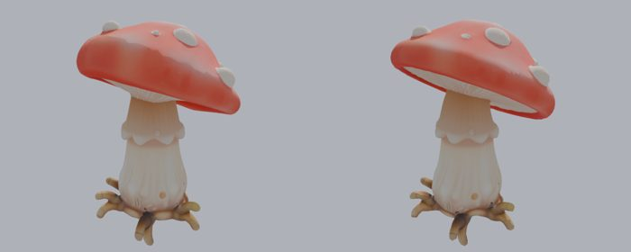
ChampiSauteur · étirement 1.48 → 1.28 (pire point 5.5 → 3.4)ChatLicorne · étirement 1.81 → 1.48 (pire point 12.7 → 10.6)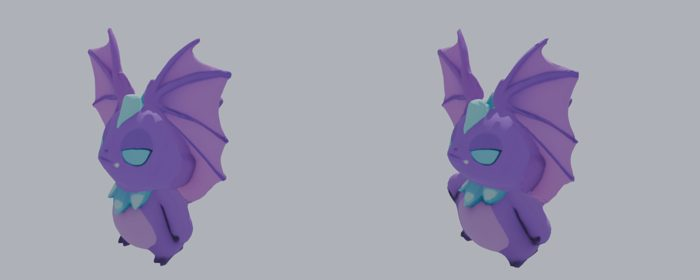
ChauveSourisCristal · étirement 2.02 → 1.84 (pire point 12.8 → 9.8)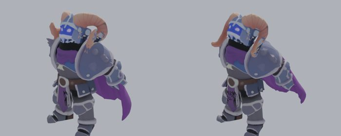
ChevalierOmbre · étirement 2.19 → 1.63 (pire point 8.3 → 3.6)Chiot · étirement 1.69 → 1.50 (pire point 10.2 → 6.3)DragonNeant · étirement 1.68 → 1.57 (pire point 6.8 → 5.5)Ecureuil · étirement 1.57 → 1.41 (pire point 6.4 → 3.5)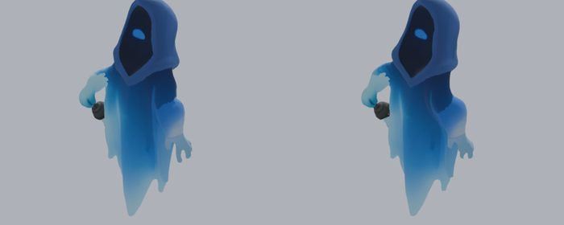
EspritPerdu · étirement 1.50 → 1.41 (pire point 4.5 → 2.3)GolemAncien · étirement 1.51 → 1.45 (pire point 6.0 → 2.5)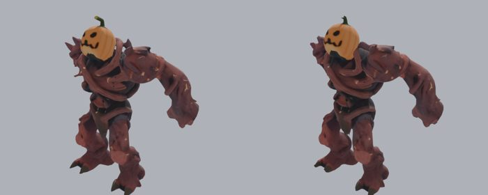
GolemCitrouille · étirement 1.68 → 1.40 (pire point 4.9 → 2.3)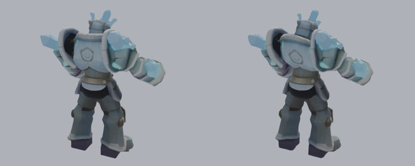
GolemCristal · étirement 1.63 → 1.43 (pire point 11.2 → 6.3)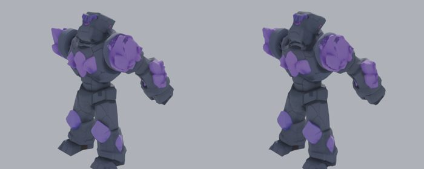
GolemGeode · étirement 1.68 → 1.43 (pire point 4.9 → 3.0)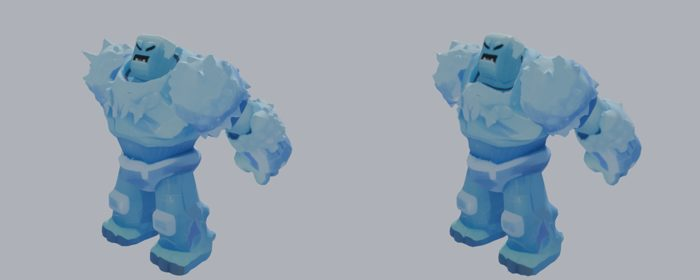
GolemGlace · étirement 1.94 → 1.46 (pire point 12.2 → 4.9)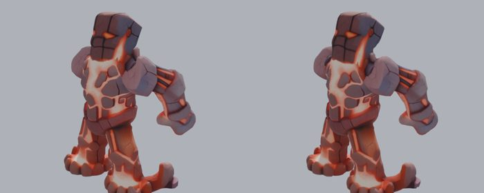
GolemMagma · étirement 1.69 → 1.49 (pire point 6.9 → 4.1)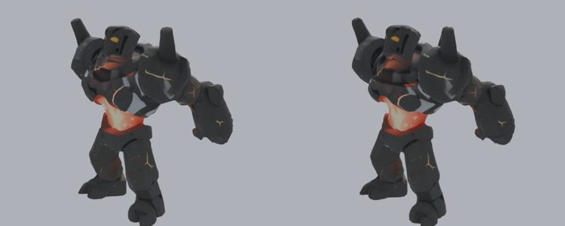
GolemMeteore · étirement 1.91 → 1.38 (pire point 5.1 → 1.9)Grenouille · étirement 1.78 → 1.60 (pire point 16.8 → 4.7)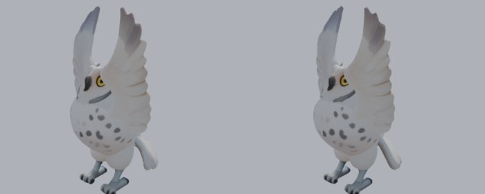
HibouNeige · étirement 1.67 → 1.61 (pire point 4.3 → 4.1)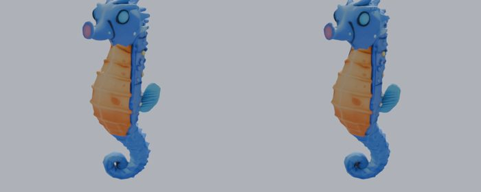
Hippocampe · étirement 1.46 → 1.26 (pire point 8.1 → 2.0)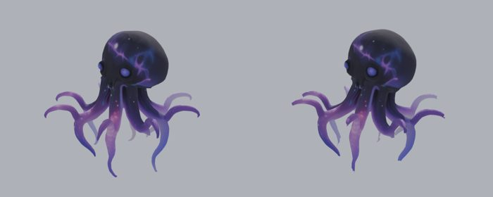
KrakenVide · étirement 1.54 → 1.38 (pire point 4.8 → 1.8)Lapin · étirement 1.58 → 1.44 (pire point 9.3 → 3.6)LapinFarceur · étirement 1.59 → 1.46 (pire point 4.5 → 2.7)LapinLicorne · étirement 1.58 → 1.44 (pire point 3.8 → 2.9)LapinLunaire · étirement 1.61 → 1.42 (pire point 4.7 → 3.5)Licorne · étirement 1.50 → 1.41 (pire point 3.8 → 3.9)LoupDesNeiges · étirement 1.59 → 1.47 (pire point 7.7 → 4.3)LoupLunaire · étirement 1.99 → 1.58 (pire point 11.9 → 7.0)LoupOmbre · étirement 1.67 → 1.61 (pire point 15.1 → 5.1)Loutre · étirement 1.71 → 1.50 (pire point 5.8 → 4.5)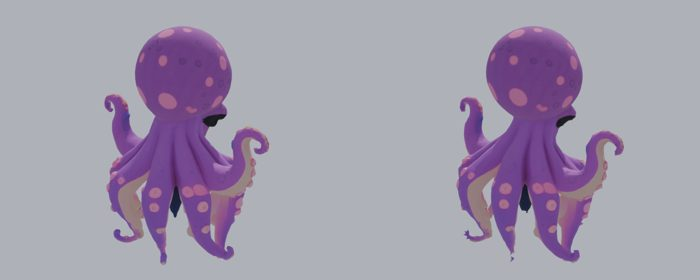
PetitKraken · étirement 1.41 → 1.18 (pire point 6.3 → 1.7)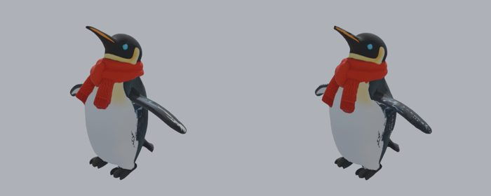
Pingouin · étirement 1.68 → 1.54 (pire point 14.0 → 3.1)Poney · étirement 1.53 → 1.45 (pire point 4.9 → 4.8)PoneyEtoile · étirement 1.54 → 1.44 (pire point 4.5 → 3.5)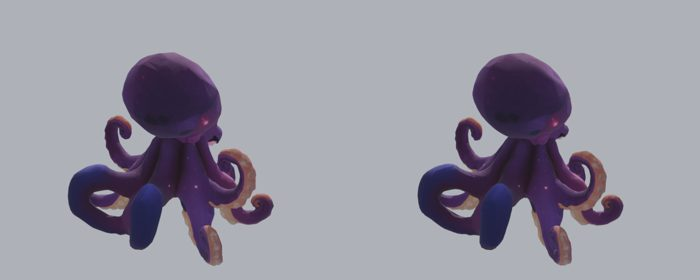
PoulpeNebuleuse · étirement 1.45 → 1.40 (pire point 11.6 → 2.1)PrismeSupreme · étirement 1.70 → 1.48 (pire point 6.2 → 5.7)RatonLaveur · étirement 1.59 → 1.39 (pire point 6.2 → 5.0)Renard · étirement 1.88 → 1.56 (pire point 9.1 → 6.8)RenardAurore · étirement 1.67 → 1.46 (pire point 18.6 → 14.2)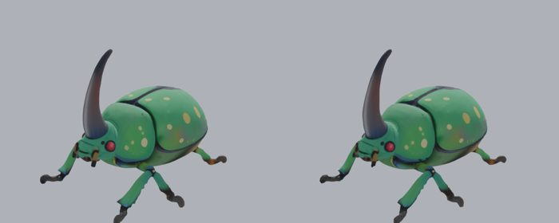
ScarabeeGeant · étirement 1.25 → 1.16 (pire point 5.0 → 1.6)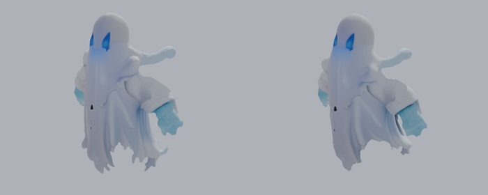
Spectre · étirement 1.85 → 1.73 (pire point 7.4 → 4.2)Tigre · étirement 1.76 → 1.55 (pire point 7.3 → 7.1)YetiGeant · étirement 1.72 → 1.61 (pire point 5.1 → 4.5)